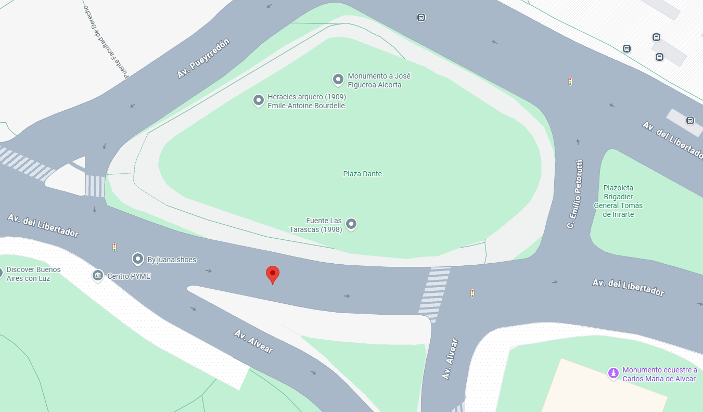

Sabor Porteño
Ubicación
Ubicado en el corazón de la ciudad. Sabor Porteño ofrece una experiencia gastronómica auténtica que combina tradición y modernidad.
📍 Dirección: Av. Libertador 1234, Buenos Aires

Horarios de atención:
- Lunes a Viernes: 8:00 AM - 23:00 PM
- Sábado y Domingo: 10:00 AM - 00:00 AM
Descripción
Sabor Porteño es un restaurante que celebra la esencia de la cocina argentina en un ambiente cálido y contemporáneo, donde cada detalle está pensado para ofrecer una experiencia memorable. Su propuesta combina recetas tradicionales con un toque moderno, destacándose por la calidad de sus carnes, opciones para distintos estilos de alimentación y una atención cercana que invita a quedarse. Ubicado en una zona privilegiada de Buenos Aires, es el lugar ideal tanto para disfrutar de una comida tranquila como para compartir momentos especiales.
Opiniones de nuestros clientes
Marta López
⭐⭐⭐⭐⭐
"La comida fue espectacular y el ambiente súper cálido. Se nota la dedicación en cada plato. Sin dudas voy a volver."
Juan Pérez
⭐⭐⭐⭐
"Me encantó la decoración del lugar y la variedad del menú. El Bife de Chorizo es increíble, lo súper recomiendo."
Carlos Alfonso
⭐⭐⭐⭐⭐
"La atención fue excelente y los platos estaban deliciosos. Un lugar maravilloso para compartir una noche inolvidable."
Mónica García
⭐⭐⭐⭐
"Excelente el servicio de mesa y la comida es una mezcla perfecta entre clásica y moderna. Volveré sin duda."
Carla Dominguez
⭐⭐⭐⭐⭐
"Tanto la ubicación como la dispocicion del lugar son excelentes. Un lugar muy recomendable para una cena especial, un evento o una cena con familia."